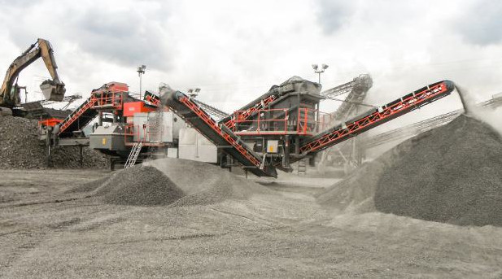

Terrassement
Préparation rigoureuse du terrain avant le lancement des travaux.
- Piquetage et décaissement
- Évacuation des eaux
- Pose de géotextile
- Remblaiement
Travaux publics
ABHAJE Frères accompagne les maîtres d’ouvrage dans la réalisation, la surveillance et l’entretien des ouvrages routiers.
Préparation rigoureuse du terrain avant le lancement des travaux.
Ponts, tunnels, murs, digues et dispositifs de transition entre les différents modes de transport.
Intervention en complément des moyens des gestionnaires pour garantir la qualité et la durabilité des chaussées.

Maîtrise du chantier
Nos équipes interviennent auprès des gestionnaires pour établir les diagnostics, contrôler les travaux et définir une stratégie globale d’entretien.